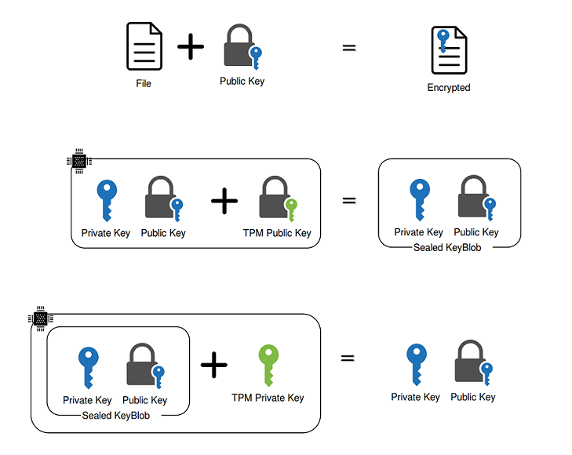

Key Encryption
Symmetric Keys
Encrypting and Decrypting share the same key. The funny thing is that the key needs to remain a secret yet it needs to be shared with another party.
Asymmetric Keys
Public and Private Keys are mathematically linked
Public Key decrypts Files encrypted with Private Key and Vice Versa
E.g. Alice Shares file with Bob. Encrypts Privately, Allows Bob to Decrypt with Public
E.g. Alice Puts the file publicly on the internet and encrypts it with Public Key. Only Alice can decrypt it with her private key
Hashes
$> sha256sum go1.7.4.linux-amd64.tar.gz
Hashes allow for checking Integrity (File Corruption, Modification)
Other uses like MD5 two images to see if they are identical
Signatures
Signatures don't have to be a separate file. They can be built into the file and compressed.
We can use signatures with a CA who signs our public key
Certificates
CA - Certificate Authority
SSL/TLS is a popular form of X.509 certificate
Works on trust of the CA. Alice and Bob don't trust each other but they trust the CA. So if the CA says the data is good,
it's good enough for them.
Hardware Security Module (HSM)
Physical device that stores keys and certificates
Can be used for generating keys
Provide tamper resistance / automatic key deletion if tampered with
Audit Logs
Can contain a cryptoprocessor to prevent bus probing
Come in card or pluggable form to plug into a computer/server. Can just use AWS KMS or CloudHSM (Pricey, $5000 up front +
$2.25/hr)
Embedded linux
Security too broad. Focus on embedded linux in a corporate setting. Particularly a gateway device that acts as the portal
to the sensors
Security is like any linux whether desktop or gateway device.
Secure Boot
UEFI (Unified Extensible Firmware Interface)
Manufacturer and OS vendor will usually work with each other so that the OS vendor can have their certificate in the KEK.
They will then sign other certificates to be in the allowed DB.
PK – Platform Key represents the root of trust and is used to protect the KEK (Key Exchange Key) database. The platform
vendor puts public portion of the Platform Key (PK) into UEFI Firmware during manufacturing. Its private portion stays
with the vendor. When updating the PK, the new PK certificate must be signed with the old one.
KEK – The KEK (Key Exchange Key) database contains trusted certificates that are allowed to modify the Allowed Signature
database (db), Disallowed Signature database (dbx) or Timestamp signature database (dbt) described below. KEK database
usually contains certificates of Operating System Vendor (OSV) and is secured by the Platform Key (PK).
DB – EFI_IMAGE_SECURITY_DATABASE Allowed Signature database – this database may contain Certification Authority certificates
or their hashes that were used to generate code-signing certificates used to sign bootloader and other pre-boot components.
If the bootloader is signed by any of certificates chaining to the CA certificate present in this database, it is permitted
to execute. In this database we may also find explicit SHA2 hashes of the bootloader images.
DBX – EFI_IMAGE_SECURITY_DATABASE1 Disallowed Signature database – this database may contain the hash of a specific binary,
an X.509 certificate, or the hash of a certificate that were compromised and/or revoked. If the bootloader is signed
by any certificate present in this database, or its hash is present here, it will be denied from execution. See KB 2871690
for list of recently revoked image hashes.
DBT – EFI_IMAGE_SECURITY_DATABASE2 This is secure boot timestamp signature database. Contains timestamping certificates
using when signing bootloader images. All of these 3 databases are locked from editing by Key Exchange Key (KEK).
Microsoft has a process where you can have your EFI bootloader signed by their certs. They scan it for malware etc and
approve. But then you're their bitch.
TPM to secure OS? drivers, software, files, ELAM (early loading anti-malware)
GRUB2 is compatible with EFI
sbsign --key DB.key --cert DB.crt unsigned.efi --output signed.efi
TPM - Trusted Platform Module
TPM is an actual microchip that is used to store crypto keys.
When taking ownership of a TPM, a private key is generated that nobody can ever read. Commands are available to expose
the public key. Someone can't walk away with your keys in the HDD.
TPM communicates via a separate bus which means software on the OS can't get straight memory access to the TPM
When generating a key, you can specify platform profile values e.g. hardware to match so that if the TPM chip gets removed
and placed into another machine, it won't start unless the config was the same.
Windows tools like Bitlocker uses the TPM to encrypt the hard drive. If someone walks away with your drive they can't
decrypt it because the private key is on the TPM.
Can be used by a bootloader to encrypt a small portion of the OS start code and then unencrypted when booting
TPM - Sealing/Unsealing

Linux Namespaces
A namespace wraps a global system resource in an abstraction that makes it appear to the processes within the namespace
that they have their own isolated instance of the global resource.
Process
Network
File system
User
...
Processes can have their own tree. Within that tree can be multiple processes separated from other parent / children trees.
This means that they cannot inspect or kill other processes outside their tree.
Network namespaces allow those processes to see an entirely different set of network interfaces including loopback.
Similar to chroot() except that chroot only affects the root folder for the process. If the child process mounts any other
drive it will only affect the child and not the parent namespace.
User namespace gives that user root privileges only in that namespace.
Cgroups
Control groups (cgroups) are a kernel mechanism for grouping, tracking, and limiting the resource usage of tasks.
cpusets: fascilitate assigning a set of CPUS and memory nodes to cgroups. Tasks in a cpuset cgroup may only be scheduled
on CPUS assigned to that cpuset.
cpuacct : provides per-cgroup cpu usage accounting.
devices : controls the ability of tasks to create or use devices nodes using either a blacklist or whitelist.
freezer : provides a way to 'freeze' and 'thaw' whole cgroups. Tasks in the cgroup will not be scheduled while they are frozen.
memory : allows memory, kernel memory, and swap usage to be tracked and limited.
net_prio : allows setting network traffic priority on a per-cgroup basis.
cpu : enables setting of scheduling preferences on per-cgroup basis.
perf_event : enables per-cpu mode to monitor only threads in certain cgroups.
Updating Your Platform - Images
Starting to see a lot of A/B Partitions.
Protects against power loss, corrupted installations and just general problems
The partition is readonly so the program is not modified and there's less attack surface
Data partition allows application to persist state after new image is installed
Allows easy rollback
Downside is that it's slower to update the entire image this way
Ubuntu Snappy Core and Brillo also use this A/B system
So how can we speed this up? Just update the application.
Mender Demo
Mender project provides us with a platform to push OTA updates to our device in the field
Device runs a Mender daemon which talks to a server so we have reporting on status and what its running
We can make a deployment group and specifically deploy to a set of devices instead of all devices
Easy to roll back if we maintain a list of images
VDeploy Details
name: release2
yocto id: test
checksum: test
compatibility: vexpress-qemu
description: My test build
Deploy Image
Building Your Own Linux with Yocto
Provides tools, templates and methods to build your own linux regardless of hardware architecture
Uses "meta" - layers to customize your system
Mender.io provides a meta-layer https://github.com/mendersoftware/meta-mender
The Yocto Project is an open source collaboration project that provides templates, tools and methods to help you create custom
Linux-based systems for embedded products regardless of the hardware architecture.
Summary
Cryotography
Hashes and Signatures
HSM and TPM
Secure Boot
Linux Namespaces and Cgroups
Keeping Updated with Mender.io
Building your own Linux with Yocto
References:
https://help.ubuntu.com/lts/serverguide/cgroups-overview.html
http://snapcraft.io/
https://en.wikipedia.org/wiki/Public_key_certificate
http://blogs.windriver.com/wind_river_blog/2016/05/sealing-data-with-tpm-on-vxworks.html
http://www.linuxjournal.com/content/take-control-your-pc-uefi-secure-boot?page=0,0
https://mender.io/
https://www.yoctoproject.org/tools-resources/videos/introducing-yocto-project